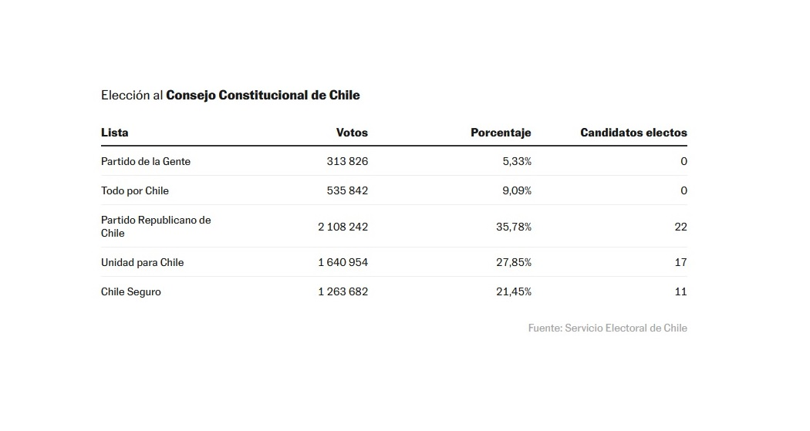

Giro en Chile: Boric retrocede y la extrema derecha se convierte en la primera fuerza política
Política
Autor: Juan Urrutia
"Chile ha derrotado a un gobierno fracasado", dijo José Antonio Kast en un discurso lleno de referencias a la inseguridad del pais.
El Partido Republicano, la formación de extrema derecha de Chile, obtuvo el domingo un contundente triunfo en las urnas en las elecciones de los 50 consejeros constitucionales,
los encargados de redactar una nueva Ley Fundamental tras el rechazo del pasado septiembre. La fuerza liderada por el excandidato presidencial José Antonio Kast, a quien derrotó
el mandatario, Gabriel Boric, ha defendido la vigencia de la Constitución actual, redactada en 1980, en la dictadura de Augusto Pinochet. La nueva propuesta de texto será plebiscitada
en diciembre. Los republicanos chilenos han alcanzado un 35% de los votos, con 22 escaños dentro del consejo. Es un terremoto en la política chilena, porque esta fuerza no solo
se impone al oficialismo del presidente Gabriel Boric, cuya lista ha quedado en segundo lugar con el 28%. La izquierda ha logrado apenas 17 de los 50 consejeros, con lo que se
quedará sin poder de veto dentro del órgano, para lo que necesitaban 21 miembros. La extrema derecha ha superado por mucho al conservadurismo histórico, que ha alcanzado un 21%
y obtuvo 11 consejeros.
“Si estos pronósticos se cumplen, paradojas de la historia, quienes se negaron por décadas a la posibilidad de un cambio constitucional y quienes representan hoy la principal
amenaza para la democracia, tendrán la cancha abierta para escribir el nuevo texto sin mayores dificultades”, señalaba antes de conocer los resultados la directora ejecutiva
Fundación Nodo XXI, Pierina Ferretti, ligada al Frente Amplio de Boric.

Kast habló la noche del domingo, desde la sede de su partido. “Hoy es el primer día de un mejor futuro para nuestro país”, aseguró el líder de esta formación, con vínculos con Vox.
“Chile ha derrotado a un Gobierno fracasado”, añadió entre gritos de “viva Chile” y “paliza”, en alusión a la amplia ventaja sobre las otras fuerzas en competencia. El presidente Boric
también se dirigió al país. En un discurso convocante, el mandatario reconoció que “el fracaso” del primer intento se debió en parte a la falta de escucha entre quienes pensaban
distinto. “Quiero invitar al Partido Republicano a no cometer el error que cometimos nosotros”, añadió.
Las dos derechas, la extrema y la tradicional —liderada por una nueva generación que se ha comprometido con una nueva Constitución— han tenido un muy buen resultado. En conjunto,
este sector político alcanza 33 consejeros en el órgano que redactará la propuesta de nueva Constitución, lo que supera incluso las mejores proyecciones de las últimas semanas. Con este
resultado, pueden proponer, aprobar y modificar normas constitucionales, porque sobrepasan holgadamente los tres quintos de quórum, para lo que necesitaban 30 puestos en el Consejo Constitucional.
Pero los tres partidos tradicionales de la oposición (la UDI, Renovación Nacional y Evópoli) estarán fuertemente presionados entre dos opciones: la tentación de endurecer sus posturas y mimetizarse
con el Partido Republicano de Kast, un exmilitante de la UDI, o intentar mantener su distancia táctica y negociar con los otros sectores del Consejo Constitucional. “La gran pregunta es si la
dirigencia de la derecha convencional va a aguantar el tsunami. La tentación de seguir a Kast y compañía será muy grande”, explica a EL PAÍS el académico Cristóbal Rovira, experto en ultraderecha.
“Todos los actores (desde los comunistas a los republicanos) han debatido sobre seguridad ciudadana día y noche, es el tema de la ultraderecha. Igual que en Europa: si todos hablan de inmigración,
quien gana la batalla es quienes están contra la inmigración”, explica el líder de la investigación Apoyo y rechazo a la ultraderecha en Chile.
En estas elecciones se han terminado por fijar, a su vez, al menos otros dos hitos de máxima relevancia. La extinción de la centroizquierda agrupada en la lista Todo por Chile
(el partido PPD del presidente Ricardo Lagos y de la actual ministra del Interior, Carolina Tohá, el Partido Radical y la Democracia Cristiana, la única fuerza de las tres que no pertenece al Gobierno de Boric).
Este conjunto de partidos obtuvo un 9% de los respaldos, con lo que no logró ningún consejero. Es un golpe duro para este sector moderado que alguna vez conformó los gobiernos de la Concertación (1990-2010) y
apostó por diferenciarse de La Moneda de Boric y de la izquierda a través de una lista separada.
Un segundo asunto crucial: el Partido de la Gente, la fuerza populista del economista Franco Parisi, que esta misma noche ha dejado Chile rumbo a Estados Unidos, donde vive, quedó en último lugar, pese
a las proyecciones que indicaban que conseguiría algunos escaños. Alcanzó el 5,4% de los respaldos, con lo que tampoco tendrá representantes dentro del Consejo Constitucional.
Los resultados del domingo en Chile han configurado una gran paradoja: cuando los 15,1 millones de chilenos tengan que volver a las urnas para aprobar o rechazar la nueva propuesta de Ley Fundamental en
diciembre, deberán elegir entre la Constitución de Kast o la de Pinochet.